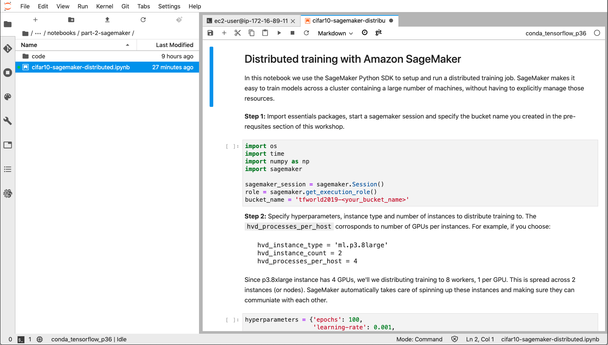

Open cifar10-sagemaker-distributed.ipynb and run through the cells. The following notebook is located at:
distributed-training-workshop > notebooks > part-2-sagemaker > cifar10-sagemaker-distributed.ipynb

Stop: Do this section on JupyterLab. Below is a copy of the jupyter notebook for reference.
In this notebook we use the SageMaker Python SDK to setup and run a distributed training job. SageMaker makes it easy to train models across a cluster containing a large number of machines, without having to explicitly manage those resources.
Step 1: Import essentials packages, start a sagemaker session and specify the bucket name you created in the pre-requsites section of this workshop.
import os
import time
import numpy as np
import sagemaker
sagemaker_session = sagemaker.Session()
role = sagemaker.get_execution_role()
bucket_name = 'tfworld2019-<your_bucket_name>'Step 2: Specify hyperparameters, instance type and number of instances to distribute training to. The hvd_processes_per_host corrosponds to number of GPUs per instances.
For example, if you choose:
hvd_instance_type = 'ml.p3.8xlarge'
hvd_instance_count = 2
hvd_processes_per_host = 4Since p3.8xlarge instance has 4 GPUs, we’ll we distributing training to 8 workers, 1 per GPU. This is spread across 2 instances (or nodes). SageMaker automatically takes care of spinning up these instances and making sure they can communiate with each other.
hyperparameters = {'epochs': 100,
'learning-rate': 0.001,
'momentum': 0.9,
'weight-decay': 2e-4,
'optimizer': 'adam',
'batch-size' : 256}
hvd_instance_type = 'ml.c5.xlarge'
hvd_instance_count = 2
hvd_processes_per_host = 1
print('Distributed training with a total of {} workers'.format(hvd_processes_per_host*hvd_instance_count))
print('{} x {} instances with {} processes per instance'.format(hvd_instance_count, hvd_instance_type, hvd_processes_per_host))Step 3: In this cell we create a SageMaker estimator, by providing it with all the information it needs to launch instances and execute training on those instances.
Since we’re using horovod for distributed training, we specify distributions to mpi which is used by horovod.
In the TensorFlow estimator call, we specify training script under entry_point and dependencies under source_dir. SageMaker automatically copies these files into a TensorFlow container behind the scenes, and are executed on the training instances.
from sagemaker.tensorflow import TensorFlow
output_path = 's3://{}/'.format(bucket_name)
job_name = 'sm-dist-{}x{}-workers'.format(hvd_instance_count, hvd_processes_per_host) + time.strftime('%Y-%m-%d-%H-%M-%S-%j', time.gmtime())
model_dir = output_path + 'tensorboard_logs/' + job_name
distributions = {'mpi': {
'enabled': True,
'processes_per_host': hvd_processes_per_host,
'custom_mpi_options': '-verbose --NCCL_DEBUG=INFO -x OMPI_MCA_btl_vader_single_copy_mechanism=none'
}
}
estimator_hvd = TensorFlow(base_job_name='hvd-cifar10-tf',
source_dir='code',
entry_point='cifar10-multi-gpu-horovod-sagemaker.py',
role=role,
framework_version='1.14',
py_version='py3',
hyperparameters=hyperparameters,
train_instance_count=hvd_instance_count,
train_instance_type=hvd_instance_type,
output_path=output_path,
model_dir=model_dir,
tags = [{'Key' : 'Project', 'Value' : 'cifar10'},{'Key' : 'TensorBoard', 'Value' : 'dist'}],
metric_definitions=[{'Name': 'val_acc', 'Regex': 'val_acc: ([0-9\\.]+)'}],
distributions=distributions)Step 4: Specify dataset locations in Amazon S3 and then call the fit function.
train_path = 's3://{}/cifar10-dataset/train'.format(bucket_name)
val_path = 's3://{}/cifar10-dataset/validation'.format(bucket_name)
eval_path = 's3://{}/cifar10-dataset/eval/'.format(bucket_name)
estimator_hvd.fit({'train': train_path,'validation': val_path,'eval': eval_path},
job_name=job_name, wait=False)Step 5: Monitor progress on TensorBoard. Launch tensorboard and open the link on a new tab to visualize training progress, and navigate to the following link
!S3_REGION=us-east-1 tensorboard --logdir s3://{bucket_name}/tensorboard_logs/Open a new browser window/tab and navigate to the folloiwng link to access TensorBoard:
https://adidas202006.notebook.us-east-1.sagemaker.aws/proxy/6006/
Make sure that the name of the notebook instance is correct in the link above.
Don’t forget the slash at the end of the URL 6006/
You can get the link to the tensorboard proxy with the following code. Just replace nb-instance-name with the name of the notebook instance you created:
from IPython.core.display import display, HTML
tb_url = f"{sm.create_presigned_notebook_instance_url(NotebookInstanceName='nb-instance-name')['AuthorizedUrl'].split('?')[0]}/proxy/6006/"
display(HTML(f"<a href=\"{tb_url}\" target=\"_blank\">Click here for Tensorboard</a>"))